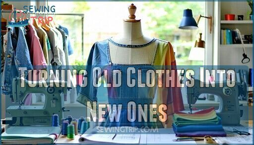

01
Clothing Repairs
We repair damaged clothing and help people keep their favourite garments for longer.
Explore services →Repair • Restyle • Rewear
REPAIR • REUSE • GIVE BACK
Second Spin Sewing Studio is a non-profit organisation that repairs, alters and upcycles clothing while helping our community reduce clothing waste.
Instead of throwing old clothes away, we believe they can be repaired, restyled and given another chance.

OUR PURPOSE
We use sewing and sustainable fashion to reduce clothing waste and make a positive difference in our community.
We repair damaged clothing and help people keep their favourite garments for longer.
Explore services →Learn useful sewing skills and discover how old clothing can be repaired, changed and given a new purpose.
View workshops →We collect clothing and support people in need through donations and community initiatives.
Learn about us →NELSON MANDELA DAY
Join our annual Mandela Day initiative. Volunteers spend 67 minutes repairing donated clothing and preparing garments for people who need them.
Find Out Moreminutes to make a difference
SUSTAINABLE FASHION
Repairing clothing allows garments to be worn for longer instead of being thrown away.
Old clothing can be reused or transformed instead of becoming unnecessary waste.
Donating repaired clothing helps support members of our community.
Contact us about repairs, workshops, volunteering or clothing donations.
Make an Enquiry